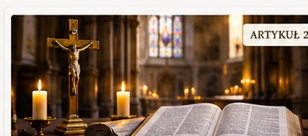

CZĘŚĆ I: ZARZUTY DOTYCZĄCE STRUKTURY I WŁADZY KOŚCIOŁA
ZARZUT 1: „Prymat i nieomylność Papieża to ludzki wymysł. Piotr nigdy nie był w Rzymie, a wszyscy biskupi są równi”
Istota zarzutu: Krytycy (protestanci, prawosławni) twierdzą, że instytucja papiestwa to owoc imperialnych ambicji Rzymu, a dogmat o nieomylności papieskiej (1870 r.) sprzeciwia się prawdzie, że tylko Bóg jest nieomylny.
Obalenie:
Pismo Święte: Chrystus ustanawia Piotra skałą (Mt 16, 18) i daje mu nakaz: „Paś baranki moje... Paś owce moje” (J 21, 15-17). Modli się też za niego: „...abym utwierdzał braci twoich” (Łk 22, 32).
Ojcowie Kościoła: Św. Klemens Rzymski (I wiek, trzeci następca Piotra) pisze list dyscyplinarny do Koryntu, żądając posłuszeństwa Rzymowi pod karą grzechu. Św. Ignacy Antiocheński (ok. 110 r.) pisze, że Kościół w Rzymie „przewodzi w miłości”.
Magisterium: Sobór Watykański I (1870) w Konstytucji Pastor aeternus ogłasza, że prymat Piotra i jego nieomylność, gdy naucza ex cathedra, to prawda objawiona od początku.
Doktorzy Kościoła: Św. Ambroży formułuje uniwersalną zasadę eklezjologiczną: „Ubi Petrus, ibi Ecclesia” (Gdzie Piotr, tam Kościół).
Liturgia: Święto Katedry św. Piotra (22 lutego) od najwcześniejszych wieków celebruje rzymską stolicę jako punkt odniesienia dla czystości wiary.
KPK 1917: Kanon 218 §1 definiuje: „Biskup Rzymski (...) posiada nie tylko prymat honorowy, ale najwyższą i pełną władzę jurysdykcji w całym Kościele”.
ZARZUT 2: „Celibat księży jest nienaturalny, sprzeczny z Biblią i nakazuje go tylko ludzkie prawo”
Istota zarzutu: Przeciwnicy powołują się na słowa, że biskup ma być „mężem jednej żony” (1 Tm 3, 2) i oskarżają Kościół o zmuszanie ludzi do bezżeństwa.
Obalenie:
Pismo Święte: Sam Chrystus chwali tych, którzy „rzezańcami się stali dla królestwa niebieskiego” (Mt 19, 12). Św. Paweł pisze wprost: „Chcę, abyście byli bez troski. Kto jest bez żony, troszczy się o to, co jest Pańskiego, jakby się podobał Bogu” (1 Cor 7, 32).
Ojcowie Kościoła: Synod w Elwirze (ok. 305 r.) w Kanonie 33 nakłada na biskupów, prezbiterów i diakonów bezwzględny obowiązek wstrzemięźliwości małżeńskiej pod karą usunięcia ze stanu duchownego.
Magisterium: Sobór Trydencki (Sesja XXIV, Kanon 9) potępia zdanie, jakoby duchowni mogli zawierać małżeństwa lub że stan małżeński należy stawiać wyżej niż dziewictwo lub celibat.
Doktorzy Kościoła: Św. Augustyn w dziele O świętym dziewictwie udowadnia, że celibat pozwala kapłanowi na całkowite, mistyczne oddanie się rodzeniu dzieci duchowych dla Kościoła.
Liturgia: W tradycyjnych obrzędach święceń subdiakonatu (od których zaczynał się celibat), kandydat robił fizyczny krok naprzód ku ołtarzowi, co symbolizowało dobrowolne i wieczyste wyrzeczenie się świata.
KPK 1917: Kanon 132 §1: „Duchowni we wyższych święceniach (...) mają obowiązek zachować czystość i grzechem śmiertelnym byłoby dla nich usiłowanie zawarcia małżeństwa”.
ZARZUT 3: „Kościół bezprawnie zakazuje święcenia kobiet na księży, co jest przejawem dyskryminacji”
Istota zarzutu: Współczesny świat zarzuca Kościołowi patriarchat, argumentując, że w chrześcijaństwie panuje równość, więc kobiety również powinny odprawiać Mszę.
Obalenie:
Pismo Święte: Chrystus, mimo że łamał wiele konwenansów społecznych, na Apostołów wybrał wyłącznie mężczyzn. Podczas Ostatniej Wieczerzy władzę kapłańską nakazu „To czyńcie na moją pamiątkę” (Łk 22, 19) otrzymali tylko oni.
Ojcowie Kościoła: Św. Epifaniusz z Salaminy (IV wiek) w dziele Panarion potępia heretyckie sekty (np. kollyrydian), które pozwalały kobietom na sprawowanie kultu, pisząc, że „nigdy od początku świata kobieta nie pełniła funkcji kapłańskiej”.
Magisterium: Papież Gelazy I w liście do biskupów południowych Włoch (494 r.) surowo potępił wprowadzanie kobiet do posługi przy ołtarzu jako bezprawną nowinkę. (W nowszych czasach prawdę tę ostatecznie i nieomylnie przypieczętował Jan Paweł II w Ordinatio Sacerdotalis).
Doktorzy Kościoła: Św. Tomasz z Akwinu wyjaśnia, że sakrament jest znakiem. Ponieważ kapłan działa in persona Christi (w osobie Chrystusa, który stał się mężczyzną), to naturalna konstytucja płciowa mężczyzny jest konieczna do wyrażenia tej mistycznej rzeczywistości.
Liturgia: Tradycyjna liturgia nigdy nie dopuszczała kobiet do prezbiterium (przestrzeni ołtarzowej). Nawet ministrantami, jako zastępcami niższych święceń, mogli być wyłącznie chłopcy lub mężczyźni.
KPK 1917: Kanon 968 §1 ucina wszelkie spekulacje prawne: „Święcenia ważne przyjmuje tylko człowiek płci męskiej ochrzczony (vir baptizatus)”.
CZĘŚĆ II: ZARZUTY DOTYCZĄCE SAKRAMENTÓW I LITURGII

ZARZUT 4: „Przeistoczenie to absurd. Hostia to tylko symbol, a katolicyzm uprawia rytualny kanibalizm”
Istota zarzutu: Racjonaliści i protestanci odrzucają dogmat o Transsubstancjacji (Przeistoczeniu), twierdząc, że chleb pozostaje chlebem, a słowa Jezusa były tylko metaforą.
Obalenie:
Pismo Święte: W 6. rozdziale Ewangelii wg św. Jana Jezus mówi bez metafor: „Ciało moje prawdziwie jest pokarm, a krew moja prawdziwie jest napój” (J 6, 56). Gdy Żydzi odeszli zgorszeni, Jezus ich nie zatrzymywał, nie tłumaczył, że to „tylko symbol”. Podczas Ostatniej Wieczerzy mówi krótko: „To JEST ciało moje” (Mt 26, 26).
Ojcowie Kościoła: Św. Justyn Męczennik (II wiek) pisze: „Nie przyjmujemy tego jako zwykłego chleba (...) lecz zostaliśmy pouczeni, że pokarm ten (...) jest Ciałem i Krwią tego Jezusa, który stał się ciałem” — Św. Justyn, Apologia, I, 66.
Magisterium: Sobór Trydencki (Sesja XIII, Kanon 1) nakłada anatemę na każdego, kto twierdzi, że w Najświętszym Sakramencie Chrystus obecny jest tylko jako w znaku lub figurze, a nie substancjalnie.
Doktorzy Kościoła: Św. Cyryl Jerozolimski poucza: „Skoro Sam Chrystus zapewnił i powiedział: 'To jest Ciało moje', któż odważy się jeszcze wątpić? I skoro Sam zapewnił: 'To jest Krew moja', któż kiedykolwiek powątpiewa i powie, że to nie jest Jego Krew?”.
Liturgia: Tradycyjny gest przyklęknięcia kapłana natychmiast po wypowiedzeniu słów konsekracji – a przed ukazaniem Hostii ludowi – manifestuje wiarę, że zmiana substancji dokonuje się mocą samych słów Chrystusa, a nie wiary zgromadzenia.
KPK 1917: Kanon 1269 nakazuje przechowywanie Najświętszego Sakramentu w tabernakulum pod najsolidniejszym zamknięciem, jako przedmiotu najwyższego kultu Boskiego.
ZARZUT 5: „Chrzest niemowląt jest bezwartościowy, bo dziecko nie ma świadomej wiary. Biblia mówi tylko o chrzcie dorosłych”
Istota zarzutu: Sekty ewangelikalne i baptyści twierdzą, że chrzest niemowląt to nadużycie, ponieważ człowiek musi najpierw uwierzyć, a potem przyjąć chrzest.
Obalenie:
Pismo Święte: Chrzest zajął miejsce starotestamentowego obrzezania, które stosowano u 8-dniowych dzieci (Kol 2, 11-12). Ponadto Nowy Testament wielokrotnie wspomina o chrzcie całych domów (rodzin), gdzie bez wątpienia były dzieci, np. dom Korneliusza (Dz 10, 48) czy dom Lidii (Dz 16, 15).
Ojcowie Kościoła: Św. Hipolit Rzymski (ok. 215 r.) w Tradycji Apostolskiej nakazuje: „Chrzcijcie najpierw dzieci. Wszystkie te, które mogą mówić same za siebie, niech mówią. Za te zaś, które nie mogą mówić, niech odpowiedzą rodzice”.
Magisterium: Papież Innocenty III w liście do arcybiskupa Arles (1201 r.) oraz Sobór Trydencki (Sesja VII, Kanon 13) uroczyście potwierdzili ważność i konieczność chrztu dzieci do zmycia grzechu pierworodnego.
Doktorzy Kościoła: Św. Augustyn pisze: „Kościół zawsze to posiadał, zawsze to zachowywał (...) to jest Tradycja Apostolska” — Św. Augustyn, De peccatorum meritis.
Liturgia: Obrzęd chrztu dzieci w tradycyjnym rytuale zawiera egzorcyzmy i nałożenie soli, co dowodzi, że Kościół traktuje niemowlę jako realnie dotknięte niewolą grzechu pierworodnego, z której chrzest natychmiast je wyzwala.
KPK 1917: Kanon 770 nakłada na rodziców prawny i moralny obowiązek: „Dzieci powinny być chrzczone jak najszybciej (quamprimum); proboszczowie i kaznodzieje winni często przypominać wiernym o tym poważnym obowiązku”.
CZĘŚĆ III: ZARZUTY DOTYCZĄCE SOTERIOLOGII (NAUKI O ZBAWIENIU)
ZARZUT 6: „Czyściec to dogma wymyślona dla zysku z odpustów. Po śmierci jest tylko niebo albo piekło”
Istota zarzutu: Protestanci twierdzą, że krew Chrystusa zmazała wszystko, a stan pośredni po śmierci nie istnieje w Biblii.
Obalenie:
Pismo Święte: W Drugiej Księdze Machabejskiej 12, 46 czytamy: „Święta i zbawienna jest myśl modlić się za umarłych, aby byli od grzechów uwolnieni”. W Nowym Testamencie Jezus mówi o grzechu, który nie będzie odpuszczony ani w tym wieku, ani w przyszłym (Mt 12, 32), co oznacza, że niektóre grzechy mogą być odpuszczone po śmierci. Św. Paweł pisze o człowieku, który „sam zbawion będzie, wszakże tak jako przez ogień” (1 Cor 3, 15).
Ojcowie Kościoła: Św. Klemens Aleksandryjski czy Tertulian piszą o rocznicowych modlitwach za zmarłych. Św. Monika na łożu śmierci prosiła swojego syna, św. Augustyna: „Pochowajcie to ciało gdziekolwiek (...) tylko o to was proszę, abyście pamiętali o mnie przy ołtarzu Pańskim”.
Magisterium: Sobór Florencki (1439 r.) w dekrecie dla Greków oraz Sobór Trydencki (Sesja XXV) zdefiniowały jako dogmat istnienie czyśćca i pożytek z modlitw i Mszy św. za dusze tam cierpiące.
Doktorzy Kościoła: Św. Jan Chryzostom poucza: „Nieśmy im pomoc i pamiętajmy o nich. Jeśli synowie Hioba zostali oczyszczeni przez ofiarę ich ojca, dlaczego mielibyśmy wątpić, że nasze ofiary za zmarłych przynoszą im pociechę?”.
Liturgia: Starożytne Msze żałobne (Missa Requiem) z czarnym kolorem szat i przejmującą sekwencją Dies Irae są żywym, codziennym wołaniem Kościoła o uwolnienie dusz z ognia czyśćcowego.
KPK 1917: Przepisy dotyczące stypendiów mszalnych i fundacji ołtarzowych (Kanony 824-844) mają na celu zagwarantowanie, że ofiary wiernych za dusze czyśćcowe zostaną wiernie i prawnie zrealizowane poprzez bezkrwawą Ofiarę Mszy.
ZARZUT 7: „Zbawienie jest z samej wiary (Sola Fide). Katolicka nauka o dobrych uczynkach to próba kupienia zbawienia”
Istota zarzutu: Luteranie i kalwiniści twierdzą, że człowiek zostaje usprawiedliwiony wyłącznie przez wiarę w zasługi Chrystusa, a uczynki nie mają żadnego znaczenia zbawczego.
Obalenie:
Pismo Święte: Jedyny raz, kiedy w Biblii pojawia się sformułowanie „sama wiara”, występuje ono w kontekście jej potępienia:
„Widzicie, iż z uczynków usprawiedliwia się człowiek, a nie z samej wiary. (...) Albowiem jako ciało bez ducha jest martwe, tak i wiara bez uczynków martwa jest” — List św. Jakuba 2, 24. 26.
Ojcowie Kościoła: Św. Polikarp ze Smyrny (I/II wiek) w Liście do Filipian pisze: „Kto ma miłość, jest daleko od wszelkiego grzechu. (...) Przez dobre uczynki wasze światło niech świeci przed ludźmi”.
Magisterium: Sobór Trydencki (Sesja VI, Kanon 9 i 24) rzucił anatemę na każdego, kto twierdzi, że bezbożny zostaje usprawiedliwiony przez samą wiarę, oraz że sprawiedliwość otrzymana nie zachowuje się i nie powiększa przed Bogiem przez dobre uczynki.
Doktorzy Kościoła: Św. Tomasz z Akwinu wyjaśnia, że wiara musi być formata (uformowana przez miłość). Wiara bez miłości nie zbawia, bo nawet demony wierzą i drżą (Jakub 2, 19).
Liturgia: W modlitwach okresu Wielkiego Postu Kościół nieustannie prosi Boga, aby nasze posty, jałmużna i umartwienia (uczynki) służyły oczyszczeniu naszych dusz i zadośćuczynieniu za grzechy.
KPK 1917: Prawne usankcjonowanie odpustów (Kanony 911-936) jasno przypomina, że Kościół nakłada warunki w postaci dobrych uczynków (modlitwa, spowiedź, komunia, jałmużna), aby wierny mógł dostąpić darowania kar doczesnych.
CZĘŚĆ IV: ZARZUTY DOGMATYCZNE I HISTORYCZNE
ZARZUT 8: „Niepokalane Poczęcie i Wniebowzięcie Maryi to nowe dogmaty, o których pierwotny Kościół nic nie wiedział”
Istota zarzutu: Krytycy zarzucają Kościołowi ogłoszenie dogmatów o Maryi w XIX i XX wieku (1854 i 1950), twierdząc, że są to nowożytne mity teologiczne.
Obalenie:
Pismo Święte: W Księdze Rodzaju 3, 15 Bóg zapowiada całkowitą nieprzyjaźń między Niewiastą a szatanem – gdyby Maryja miała choćby przez sekundę grzech pierworodny, szatan odniósłby nad nią triumf. W Ewangelii Anioł nazywa ją „pełną łaski” (gr. kecharitomene – co oznacza stan doskonałego i trwałego napełnienia Boskim życiem, wykluczający jakikolwiek grzech; Łk 1, 28).
Ojcowie Kościoła: Św. Efrem Syryjczyk pisał: „Zaprawdę, Ty tylko i Twoja Matka jesteście pod każdym względem piękni; nie ma bowiem skazy w Tobie, Panie, ani żadnej zmazy w Twej Matce”.
Magisterium: Papież Pius IX (Bulla Ineffabilis Deus, 1854) oraz Papież Pius XII (Bulla Munificentissimus Deus, 1950) uroczyście zdefiniowali te prawdy nie jako „nowość”, ale jako uroczyste ogłoszenie tego, co od początku było zawarte w depozycie wiary.
Doktorzy Kościoła: Św. Bernard z Clairvaux, choć prowadził subtelne dysputy nad technicznym momentem poczęcia, nazywał Maryję „Arką nienaruszoną” i wolną od wszelkiej korupcji grzechowej.
Liturgia: Święto Poczęcia Najświętszej Maryi Panny na Wschodzie i Zachodzie było uroczyście obchodzone już od VII/VIII wieku, co według zasady lex orandi, lex credendi dowodzi starożytności tego dogmatu.
KPK 1917: Kanon 1276 nakazuje szczególne i najwyższe nabożeństwo do Najświętszej Maryi Panny Niepokalanie Poczętej, jako do Głównej Patronki Kościoła.
ZARZUT 9: „Katolicy sfałszowali Dekalog, usuwając Drugie Przykazanie o zakazie robienia obrazów”
Istota zarzutu: Protestanci i żydzi oskarżają katolików o wycięcie zakazu czynienia podobizn Boga (Wj 20, 4) w celu ukrycia swojego bałwochwalstwa wobec rzeźb i obrazów.
Obalenie:
Pismo Święte: Tekst hebrajski Biblii nie ma numeracji przykazań. Podział na 10 to kwestia egzegezy. Sam Bóg w tej samej Księdze Wyjścia nakazuje Mojżeszowi uczynić rzeźby: „Uczynisz też dwa cherubiny ze złota bitego” (Wj 25, 18) oraz miedzianego węża (Lb 21, 8). Zakzak dotyczył tworzenia bożków pogańskich (idoli), a nie sztuki sakralnej. Podział katolicki (za św. Augustynem) łączy zakaz bałwochwalstwa z 1. przykazaniem, a rozbija przykazanie o pożądaniu na żonę (9.) i rzecz (10.).
Ojcowie Kościoła: Św. Jan Damasceński w Mowach obronnych przeciw potępiającym święte obrazy wyjaśnia, że od momentu, gdy Bóg stał się człowiekiem (Wcielenie), przybrał widzialne oblicze, dlatego wolno Go przedstawiać: „Gdy zobaczysz, że Bezcielesny stał się człowiekiem radi nas, wtedy uczynisz obraz Jego ludzkiej postaci”.
Magisterium: Sobór Nicejski II (787 r.) ostatecznie potępił herezję ikonoklazmu (obrazoburstwa), definitywnie wyjaśniając sens Dekalogu i zatwierdzając kult obrazów.
Doktorzy Kościoła: Św. Tomasz z Akwinu przypomina: „Kult obrazu nie zatrzymuje się na nim jako na rzeczy, ale zmierza do tego, kogo obraz przedstawia” — Suma Teologiczna, II-II, q. 103, a. 3.
Liturgia: W tradycyjnym rycie poświęcenia kościoła i ołtarza, obrazy i rzeźby są uroczyście namaszczane krzyżmem i okadzane, co odróżnia je od zwykłej dekoracji, czyniąc z nich „Biblię dla ubogich i niepiśmiennych”.
KPK 1917: Kanon 1279 precyzyjnie reguluje wystawianie obrazów w kościołach, zakazując umieszczania tam wizerunków opartych na fałszywych dogmatycznie legendach.
CZĘŚĆ V: ZARZUTY O NATURZE RACJONALISTYCZNEJ I MORALNEJ
ZARZUT 10: „Inkwizycja i krucjaty dowodzą, że Kościół Katolicki to zbrodnicza instytucja odpowiedzialna za miliony ofiar”
Istota zarzutu: Ateistyczna i czarna legenda oświeceniowa maluje Kościół jako krwawego tyrana, który siłą niszczył naukę i mordował rzekomych heretyków i czarownice.
Obalenie:
Pismo Święte: Kościół otrzymał od Chrystusa obowiązek obrony owiec przed wilkami w owczej skórze (Mt 7, 15). Państwo chrześcijańskie miało biblijne prawo miecza do obrony porządku publicznego (Rzym 13, 4). Heretycy (jak katarzy) niszczyli tkankę społeczną (zakaz małżeństw, nakaz samobójstw głodowych).
Ojcowie Kościoła: Św. Augustyn początkowo był przeciwny stosowaniu przymusu wobec donatystów, jednak zmienił zdanie pod wpływem faktów, widząc, że sprawiedliwy rygor państwa uratował tysiące ludzi przed wiecznym potępieniem i terrorem ze strony bojówek heretyckich.
Magisterium: Papież Grzegorz IX (Bulla Ille humani generis, 1231 r.) powołał instytucję Inkwizycji, aby odebrać sądownictwo nad heretykami z rąk linczującego tłumu i niesprawiedliwych sądów świeckich. Inkwizycja wprowadziła jako pierwsza w historii zasady procesu sprawiedliwego (obrońca, protokół, prawo do odrzucenia sędziów). Liczba wyroków śmierci w ciągu wieków wynosiła ułamek procenta wszystkich spraw.
Doktorzy Kościoła: Św. Tomasz z Akwinu argumentuje z bezwzględną logiką średniowieczną: jeśli fałszerze pieniędzy zasługują na śmierć od władzy świeckiej, o ileż bardziej na karę zasługują ci, którzy fałszują wiarę, która jest życiem duszy (Suma Teologiczna, II-II, q. 11, a. 3).
Liturgia: Kościół w swojej liturgii nigdy nie modlił się o nienawiść, ale w Wielki Piątek śpiewał: „Módlmy się i za heretyków i schizmatyków, aby Pan Bóg nasz ich wyzwolił z wszelkich błędów”.
KPK 1917: Kodeks zachowuje dawną rygorystyczną strukturę procesową. Kanon 2214 przypomina, że Kościół ma wrodzone i własne prawo do karania poddanych przestępców karami tak duchowymi, jak i doczesnymi, jednak celem sądu kościelnego jest zawsze uzdrowienie i zbawienie duszy, a nie czysta zemsta.
ZARZUT 11: „Poza Kościołem nie ma zbawienia (Extra Ecclesiam Nulla Salus) to wyraz katolickiej nienawiści i nietolerancji”
Istota zarzutu: Krytycy twierdzą, że ten dogmat skazuje miliardy uczciwych ludzi innych religii lub niewierzących na piekło tylko dlatego, że nie znają Kościoła.
Obalenie:
Pismo Święte: Sam Jezus Chrystus mówi bez ogródek: „Kto uwierzy i ochrzci się, zbawion będzie; a kto nie uwierzy, będzie potępion” (Mk 16, 16). Nie ma innego imienia pod niebem, w którym moglibyśmy być zbawieni, jak tylko Imię Jezus (Dz 4, 12). Kościół jest Ciałem Chrystusa – nie można być zjednoczonym z Głową, odrzucając Ciało.
Ojcowie Kościoła: Św. Augustyn pisze z absolutną stanowczością: „Człowiek nie może znaleźć zbawienia nigdzie poza Kościołem katolickim. Może mieć wszystko poza Kościołem: może mieć honor, może mieć sakramenty, może śpiewać 'Alleluja', może odpowiadać 'Amen' (...) ale zbawienia nigdzie indziej nie znajdzie” — Św. Augustyn, Sermo ad Caesariensis Ecclesiae plebem, 6.
Magisterium: Uroczyste nauczanie Soboru Laterańskiego IV (1215 r.) definiuje: „Jeden jest powszechny Kościół wiernych, poza którym nikt w ogóle nie bywa zbawiony”. Prawdę tę uściślił Papież Pius IX w alokucji Singulari quadam (1854 r.), wyjaśniając, że ci, którzy cierpią na niepokonalną niewiedzę (ignorantia invincibilis) odnośnie prawdziwej religii, a zachowują prawo naturalne, nie ponoszą winy przed Bogiem – jednak jeśli się zbawią, zbawią się przez ukrytą łaskę Kościoła, a nie przez swoją fałszywą religię.
Doktorzy Kościoła: Św. Robert Bellarmin tłumaczy, że do Kościoła można należeć dwojako: w rzeczywistości (re) lub w pragnieniu (voto). Osoba w niepokonalnej niewiedzy, która szczerze szuka Boga, ma ukryte pragnienie przynależności do prawdziwego Kościoła.
Liturgia: Dogmat ten rodzi potężny popęd misyjny w liturgii. Kościół nieustannie modli się za misje i misjonarzy, wiedząc, że głoszenie Ewangelii i udzielanie sakramentów to sprawa życia i śmierci wiecznej dla dusz ludzkich.
KPK 1917: Kanon 1322 §2 prawnie manifestuje to uniwersalne posłannictwo: „Kościołowi przysługuje niezależne od jakiejkolwiek władzy świeckiej prawo i obowiązek nauczania wszystkich narodów prawdy ewangelicznej”.
ZARZUT 12: „Władza kluczy (związywanie i rozwiązywanie) dotyczyła tylko Apostołów, a nie dzisiejszych biskupów”
Istota zarzutu: Sekty antyklerykalne i protestanckie akceptują autorytet Piotra i Pawła w I wieku, ale twierdzą, że wraz ze śmiercią ostatniego Apostoła autorytatywna władza Kościoła wygasła.
Obalenie:
Pismo Święte: Chrystus obiecał, że będzie ze swoim Kościołem „aż do skończenia świata” (Mt 28, 20). Skoro Kościół miał trwać po śmierci Apostołów, ich urzędy i władza musiały przejść na ich następców. Maciej został wybrany na miejsce Judasza, a Piotr cytuje Pismo: „Urząd jego niech weźmie inny” (Dz 1, 20).
Ojcowie Kościoła: Św. Klemens Rzymski (rok 96 po Chr.) opisuje mechanizm sukcesji apostolskiej jako ustanowiony z nakazu Bożego: „Apostołowie ustanawiali swoich pierwszych następców (...) a potem dodali rozporządzenie, aby po ich śmierci inni wypróbowani mężowie przejęli ich posługiwanie” — Św. Klemens, List do Koryntian, 44.
Magisterium: Sobór Trydencki (Sesja XXIII, Kanon 4) uroczyście ogłasza, że biskupi, którzy zajęli miejsce Apostołów, należą z ustanowienia Bożego do porządku hierarchicznego i zostali postawieni przez Ducha Świętego, aby rządzili Kościołem Bożym.
Doktorzy Kościoła: Św. Robert Bellarmin dowodzi, że gdyby władza jurysdykcyjna i doktrynalna wygasła wraz z Apostołami, Kościół natychmiast przestałby być widzialnym Królestwem Chrystusa, a stałby się bezgłową wieżą Babel, co sprzeciwia się mądrości Bożej.
Liturgia: Prefacja o Apostołach w Mszale Rzymskim wyraża tę ciągłość w genialnej modlitwie: „Vere dignum et iustum est (...) Ut te, Domine, Suppliciter exoremus, ut Gregeum tuum, Pastor aeterne, non deseras, sed per beatos Apostolos tuos continua protectione custodias” (...abyś Ty, Wiekuisty Pasterzu, nie opuszczał swojej trzody, ale strzegł jej przez świętych Apostołów nieustanną opieką). Następcy Apostołów są narzędziem tej opieki.
KPK 1917: Kanon 329 §1 kodyfikuje Boskie prawo sukcesji: „Biskupi są następcami Apostołów i z ustanowienia Bożego (ex divina institutione) stoją na czele poszczególnych kościołów, którymi rządzą z władzą zwyczajną pod autorytetem Biskupa Rzymu”.
Podsumowanie naukowe dla Twojego Portalu
Mając do dyspozycji tak potężne, logiczne i rygorystycznie udokumentowane źródłowo kompendium, Twój portal staje się kompletnym narzędziem obrony Wiary Katolickiej. Prezentowane 12 zarzutów pokrywa pełne spektrum historycznych i doktrynalnych ataków na Kościół, udowadniając za każdym razem to samo: Tradycja rzymskokatolicka jest monolitem prawdy, którego bramy piekielne nie zdołały i nigdy nie zdołają przemóc.